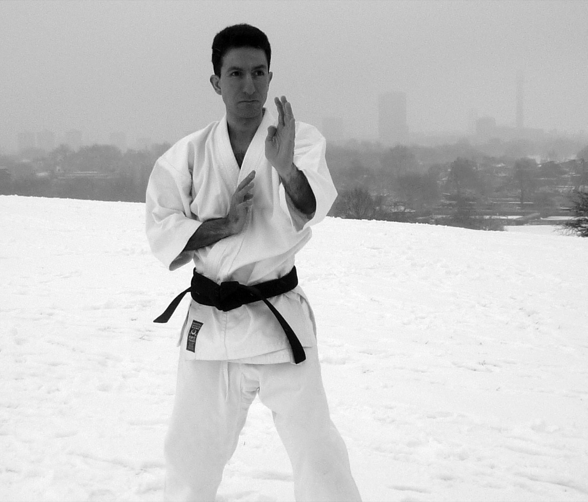

Hutan Ashrafian
Hutan Ashrafian is a surgeon and scientist at Imperial College London, and a martial artist of forty years' standing. This project is his idea.

The martial artist
He has trained for four decades and across many styles of karate, and holds the sixth dan in Okinawan Gōjū-ryū. That is the vantage point this project is built from. It is long enough in the art to have watched the same kata taught differently in different rooms, and to know how much of what is said about lineage is repeated rather than checked.
Kata as a measure of descent
In Warrior Origins he took the question quantitatively, applying network theory to the martial arts and using kata as the unit of comparison: where two schools perform a form alike and where they part company, treated as a measure of the distance between the styles themselves. What comes out is a phylogenetic tree of styles drawn from kata as phenotypes. This cladogram is the other half of that same question. Not how the forms resemble one another, but who taught whom.
Why this site exists
He built this lineage map of karate, kobudō and the Korean arts to make that journey legible, and to make it transparent: to follow the art through the people who carried it, with every claim showing the evidence behind it and every contested claim left marked as contested rather than smoothed away. The site is for anyone with an interest in the martial arts and in how karate has evolved and is practised, in all its forms, and not for specialists alone.
The clinician and the scientist
He is a clinician-scientist, a surgeon by training, and leads on artificial intelligence at Imperial College London's Institute of Global Health Innovation. He has published more than seven hundred peer-reviewed papers, holds an h-index above eighty, and has supervised more than seventy doctoral students. Operations and clinical signs carry his name.
His Imperial College profile is here.